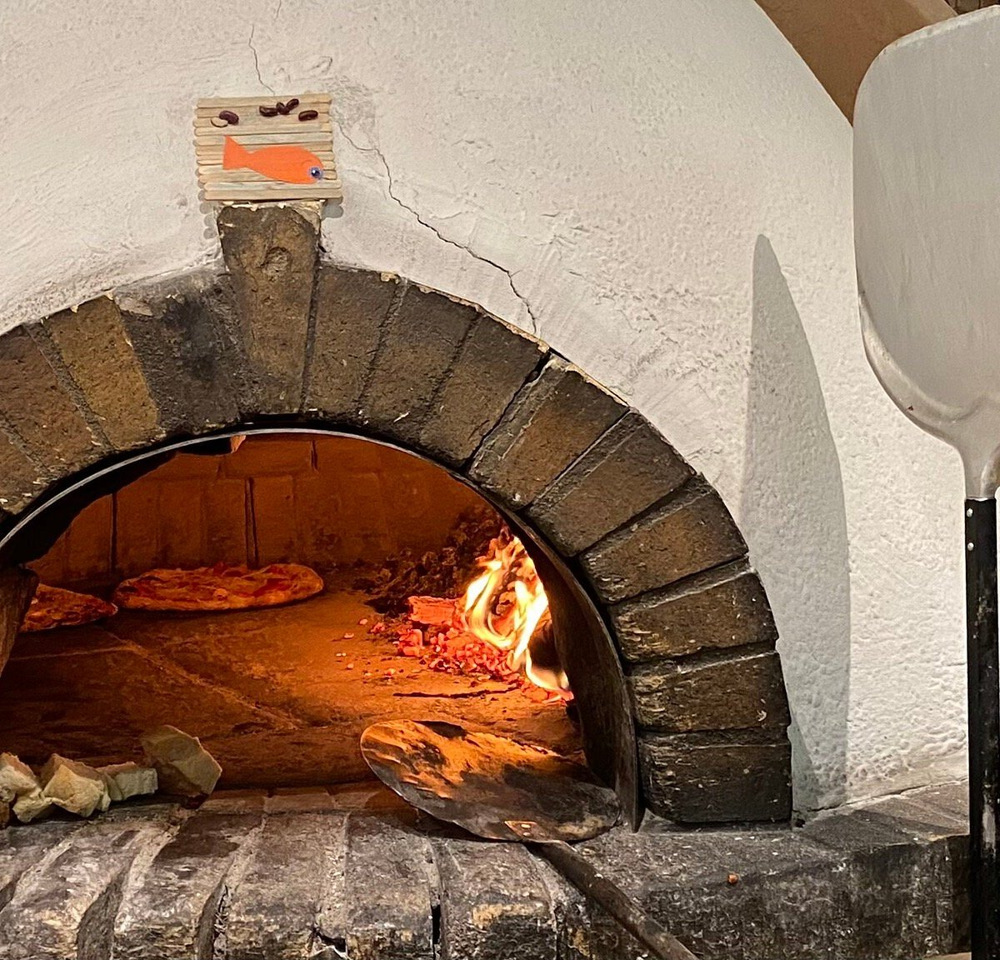
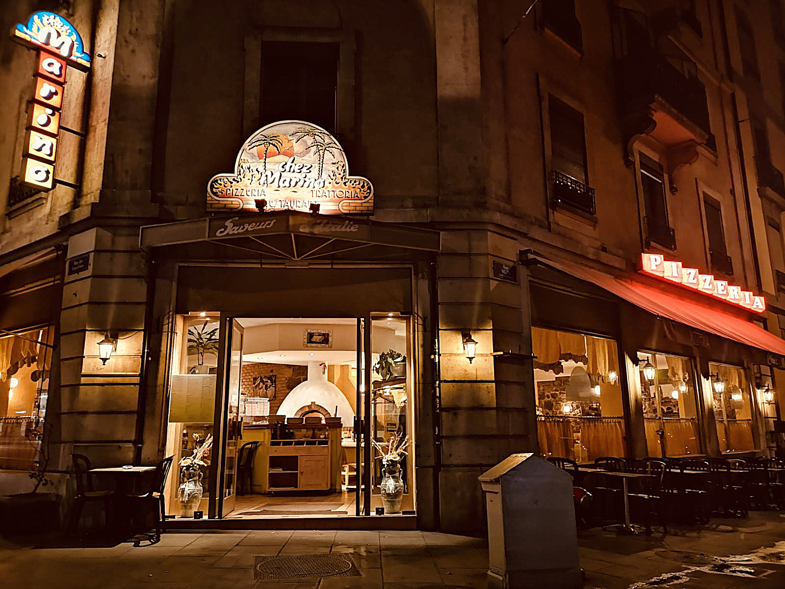
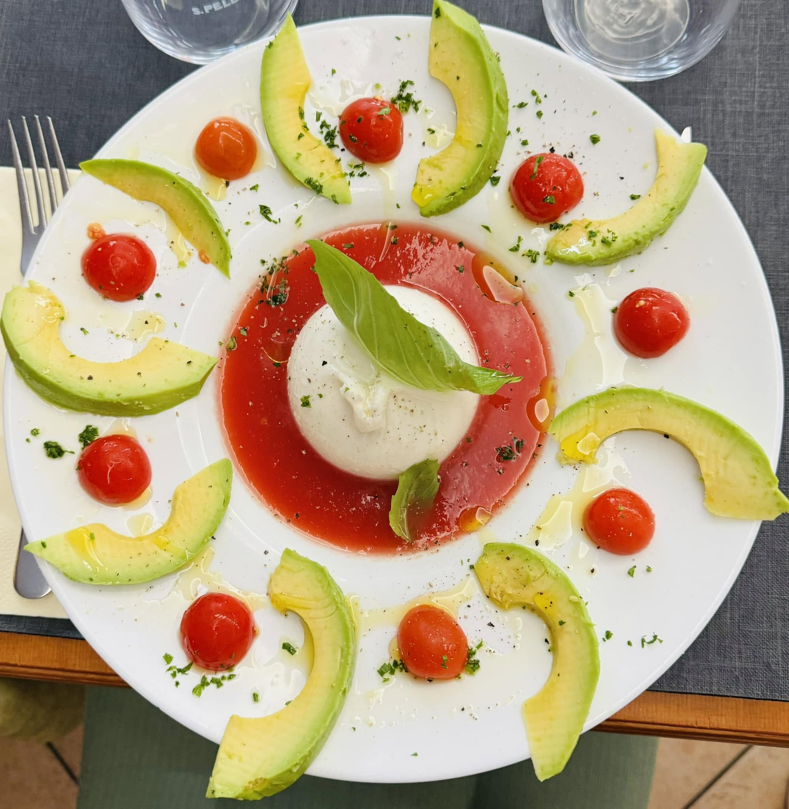
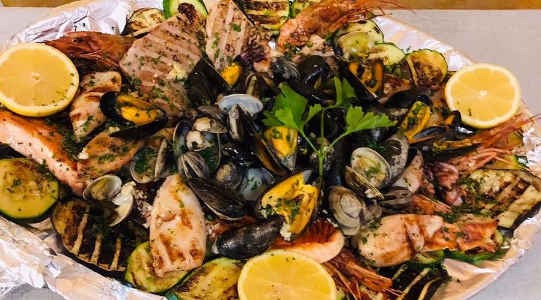
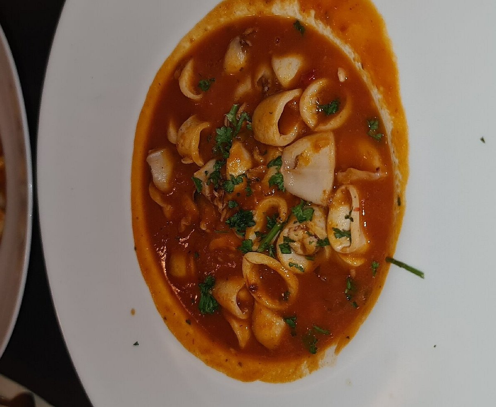
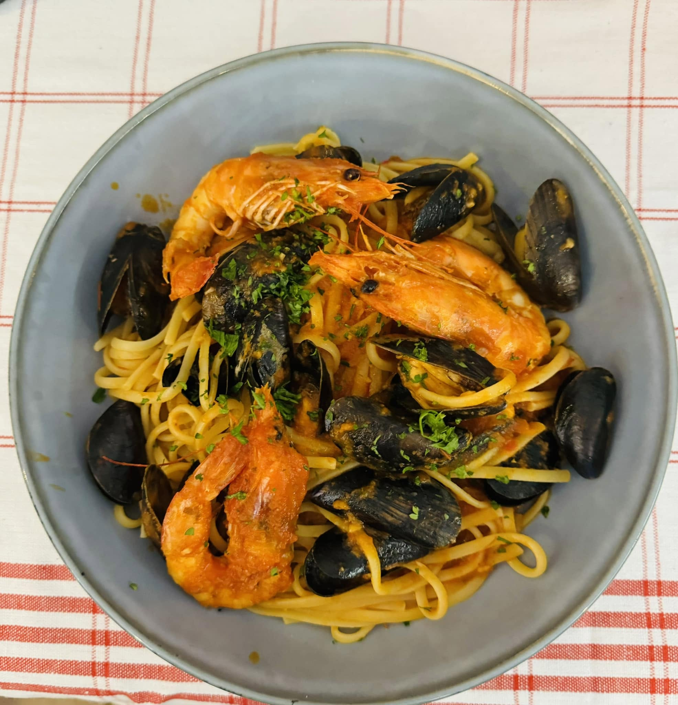
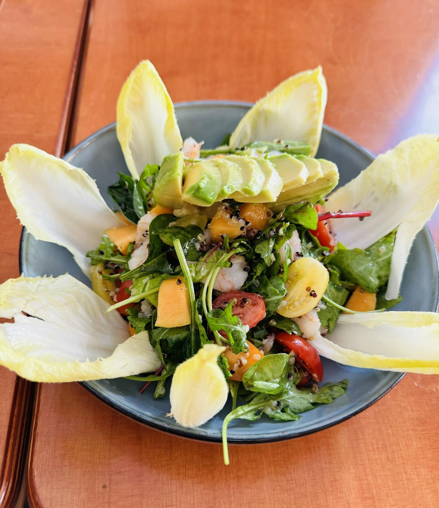
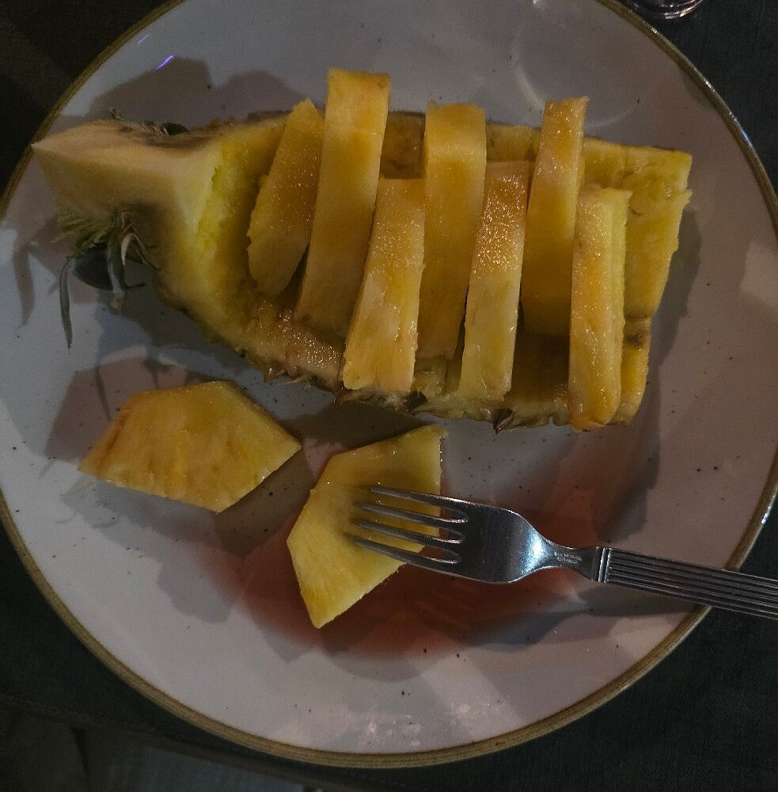
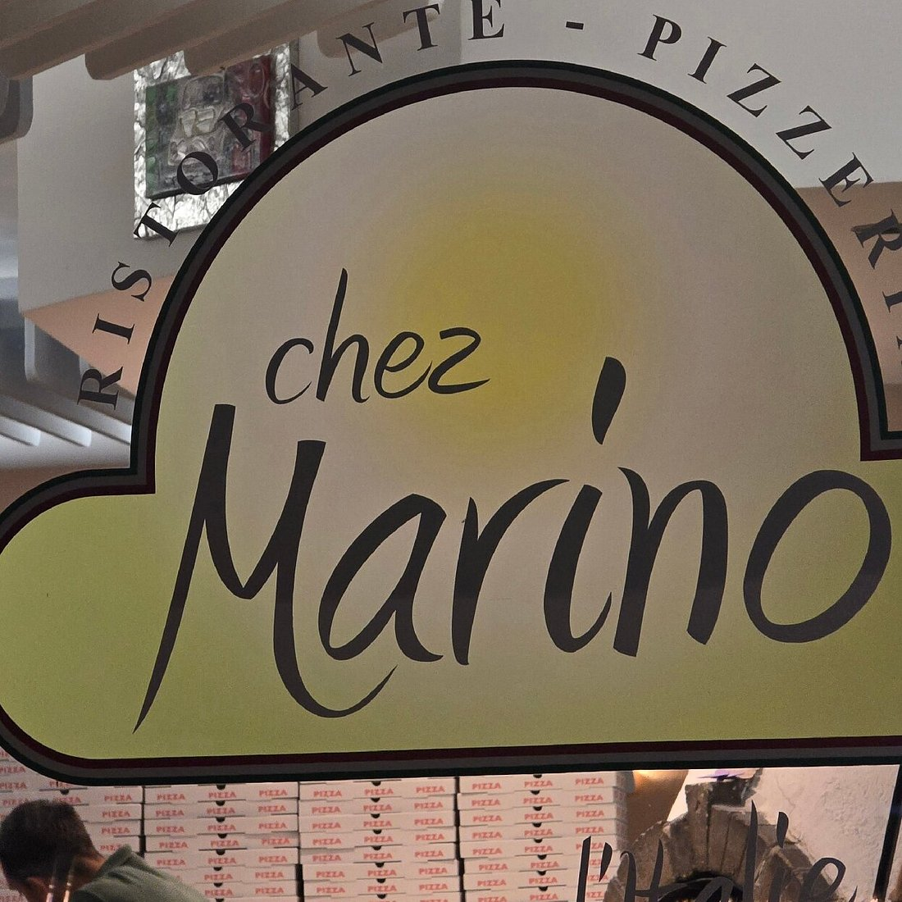
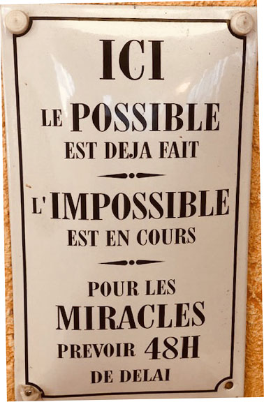

Restaurant italien · Eaux-Vives, Genève
Toutes les saveurs
de l’Italie.
Pizzas cuites au feu de bois, pâtes maison et recettes des Pouilles : la trattoria familiale de Veronica, Giuseppe et leur squadra, aux Eaux-Vives.

La carte
Le goût des Pouilles, au feu de bois.
Pizzas napolitaines cuites au feu de bois, pâtes fraîches et recettes de famille — la cuisine italienne, sans détour.
Tricolore Végé
Mozzarella di bufala, tomates fraîches et roquette.
Carpaccio de bœuf
Fines tranches de bœuf cru, copeaux de parmesan, roquette et champignons.
Vitello tonnato
Fines tranches de veau nappées d’une sauce au thon, recette piémontaise classique.
Fantasia di mare
Salade de fruits de mer, fraîche et généreuse.
Insalata delle Alpi
Salade de chèvre chaud, fines tranches de jambon de Parme et croûtons.
Insalata mediterranea Végé
Aubergines, courgettes et poivrons grillés, mozzarella di bufala, sur lit de roquette.
Linguine alle vongole Spécialité
Palourdes, ail et persil, à l’italienne.
Spaghetti al pesto
Sauce au basilic frais, préparée maison.
Ravioli della nonna
Farcis aux épinards et à la ricotta, servis au beurre et à la sauge.
Tortellini « Grand-Mère »
Viande, crème, petits pois et jambon.
Lasagne
À la viande hachée de bœuf, recette traditionnelle.
Risotto ai frutti di mare
Risotto crémeux, généreusement garni de fruits de mer.
Margherita Végé
Tomate, mozzarella et origan — la classique napolitaine.
Tirrenica Signature
Bresaola, roquette, mozzarella di bufala, parmesan et huile à la truffe.
Bufalotta
Salami piquant, salade de trévise et mozzarella di bufala.
Napoletana
Anchois, olives et câpres.
Quattro formaggi Végé
Gorgonzola, ricotta et parmesan.
Calzone
Pizza pliée, jambon cuit et artichauts.
Alpina Végé
Tomates cerises, roquette, fromage de chèvre et miel — sans sauce tomate.
Frutti di mare
Fruits de mer et ail.
Tagliata di manzo
Tranches de faux-filet de bœuf, roquette et copeaux de parmesan.
Entrecôte al pepe
Entrecôte grillée, poivre concassé.
Tartara di manzo
Tartare de bœuf préparé maison.
Branzino in umido
Filet de loup, câpres, olives et tomates fraîches.
Polpo ai ferri
Poulpe grillé, pommes de terre écrasées.
Tiramisù Maison
La recette de la maison, comme en Italie.
Panna cotta
Onctueuse et légère.
Affogato al caffè
Glace vanille noyée dans un espresso.
Zabaglione
Sucre, marsala et vin blanc, œuf, servi chaud.
La maison
Une trattoria de famille, du cœur des Pouilles aux Eaux-Vives.
Ici, on cuisine comme chez Marino — parce que c’est chez lui que tout a commencé.
Chez Marino est né de l’histoire de Marino, originaire des Pouilles, qui a voulu apporter à Genève la cuisine généreuse de sa terre natale. À la rue Muzy, aux Eaux-Vives, sa trattoria a grandi autour d’un four à bois et d’une grande table familiale.
Aujourd’hui, c’est Veronica, Giuseppe et leur squadra qui perpétuent cet esprit : pâtes travaillées à la main, pizzas napolitaines sorties du four à bois, et une cave composée de vins des Pouilles, de Toscane et de Vénétie.
« Ici, le possible est déjà fait. L’impossible est en cours. Pour les miracles, prévoir 48h de délai. » — la pancarte qui résume bien l’esprit de la maison.

En images








Avis
Les habitués ne s’y trompent pas.
« Pizza is amazing and done in wood oven, the taste is perfect. The staff is also really nice and the prices are cheap. »
« Spectacular lunch. Excellent cuisine, super welcome and fantastic friendliness of the staff. »
« Excellent meal, great for vegetarians, terrific service, friendly staff. »
« Les meilleurs pizzas de Genève ! Le personnel est vraiment sympathique. L’huile piquante faite maison est délicieuse !! »
« Le repas fut encore une fois très bon : autant les pizzas que les Tagliatelle. Le service fut propre et rapide malgré l’affluence. »
« Le lieu est incontestablement une merveille hors du temps grâce à son effectif très chaleureux. La cuisine et son ambiance en salle nous transportent directement en terres italiennes. »
Nous trouver
Rue Muzy 22, aux Eaux-Vives.
À deux pas du lac, ouverts tous les soirs — et à midi — pour un vrai repas italien.
Adresse
Rue Muzy 22, 1207 GenèveHoraires
- Lundi11:30–14:30 · 18:30–01:00
- Mardi11:30–14:30 · 18:30–01:00
- Mercredi11:30–14:30 · 18:30–01:00
- Jeudi11:30–14:30 · 18:30–01:00
- Vendredi11:30–14:30 · 18:30–02:00
- Samedi11:30–14:30 · 18:30–02:00
- Dimanche11:30–14:30 · 18:30–01:00
Accès
Accès fauteuil roulant.
Contact
Une envie de pizza au feu de bois ?
Une question, un mot gentil ? Appelez-nous, ou écrivez-nous ci-contre.
La réservation se fait par téléphone — conseillée le week-end, quand la salle est pleine à craquer.